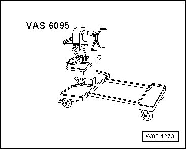
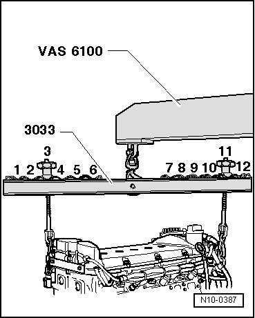
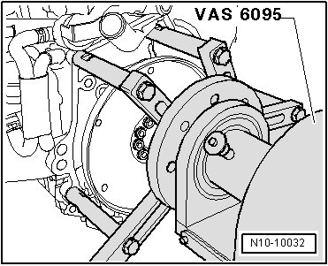

Securing Engine to Assembly Stand
Securing Engine to Assembly Stand
Special tools, testers and auxiliary items required
• Engine and transmission holder (VAS 6095)

Secure engine to engine and transmission stand (VAS 6095) when working on engine.
Procedure
- Remove transmission.
• To separate engine and transmission: --> Operating instructions for scissor-type assembly platform (6131)
- After separating engine from transmission, secure torque converter to prevent it from "falling out".
- Attach lifting tackle (3033) as follows and lift engine from engine and transmission holder (VAS 6100) using shop crane (6131).

• Vibration damper side: Position 3
• Flywheel side: Position 11
• The positions of lifting tackle (3033) inscribed with 1 to 12 point toward flywheel side.
• Threaded spindles are set in length according to necessity.
- Fasten engine to engine and transmission holder (VAS 6095).
